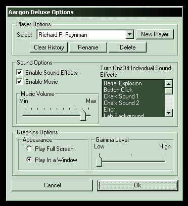

Using the options button on the main panel will bring you to the player options dialog.

Click the options button to edit options
On the player options dialog you can rename a player, create a new player, delete a player, or clear a player's history.
Clearing a player's history will remove all the solved check-marks you have for that player in the game. Be careful though because if you use this then you will have to re-solve the levels again to unlock those you had access to before!

Click 'New Player', 'Rename', or 'Delete' to modify players. Click 'Clear History' to clear which levels the current player has already solved.
You may also use this dialog to adjust sound options.
If you'd rather play the game without sound effects. Simply click on 'Enable Sounds' checkbox so that it doesn't have a check mark. Similarly you can turn on or off Music with the 'Enable Music' checkbox. Music and sound effects can also be toggled on the level set select screen using the buttons on the control panel.
You can disable individual sound effects by unselecting them in the list on the right hand side. This is used if you want sound effects in general but don't like a particular sound.
You can adjust the volume of the music in the game with the volume slider. Note that sound effects volumes are not adjusted by this slider, only the music. If you want to change the general sound volume use your windows volume control or adjust the volume on your speakers.
If the brightness setting on your monitor is set to a low value, you may find it difficult to see the grid lines in the levels. If this is the case, you can increase the brightness of the grid by adjusting the Gamma Level. Move the Gamma slider to the right to increase the brightness of the grid.
Lastly, if you want to run the game in a window you can select the 'Play in a Window' radio button. By default the game will play full screen. Note that you can also use the 'ALT+ENTER' keys to switch between full screen and windowed mode. If you are running your windows desktop in 256 color mode we strongly recommend you consider switching to hicolor or true color mode. This game cannot play in a window in 256 color mode. You will also need to switch to hicolor or truecolor mode to use the Aargon Deluxe level editor.